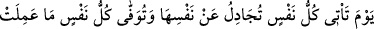
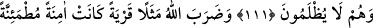
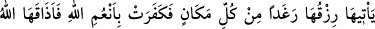
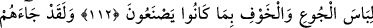
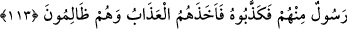

KIYÂMET GÜNÜ
ASLÂ ZULMEDİLMEZ
111. O gün, herkes gelip kendi canını kurtarmak için uğraşır ve herkese
yaptığının karşılığı eksiksiz ödenir, onlara asla zulmedilmez.
112. Allah, (ibret için) bir ülkeyi örnek verdi: Bu ülke güvenli, huzurlu idi; ona
rızkı her yerden bol bol gelirdi. Sonra onlar Allah’ın nimetlerine karşı nankörlük
ettiler. Allah da onlara, yaptıklarından ötürü açlık ve korku sıkıntısını tattırdı.
113. Andolsun ki, onlara kendilerinden peygamber geldi de onu yalanladılar.
Onlar zulmederlerken azap onları yakalayıverdi.
“O gün,” yâni kıyamet günü “herkes gelip kendi canını kurtarmak için uğraşır”
Yâni, hatırla ey Muhammed ve hitaba elverişli herkes, o gün her insan, “Şunlar bizi
sapıttı, biz müşrik değildik.” diye özür beyan ederek azabdan kurtulmak için kendi
nefsiyle hasımlaşır ve mücadele eder. Artık başkası onu ilgilendirmez ve “Nefsim,
nefsim!” der. Bu, cehennemin kükrediği zamandır. İşte o zaman diz çökmeyen hiçbir
mukarreb (Hakk’a yakınlaştırılmış) melek ve Halilu’r-rahman İbrahim (a.s.) dahil “Ya
Rabbi! Nefsim” yani nefsimi kurtar, demeyen hiçbir mürsel (Allah tarafından
gönderilmiş) peygamber kalmaz.
Âyette “nefs” kelimesi “nefs”e izafet edilmiştir. Çünkü bir şeyin kendisine “nefs”
dendiği gibi zıddına da “gayr” denir. “Nefs” bir şeyin bütünü, hepsi anlamına da gelir.
Âyetteki birinci “nefs” herkes anlamınadır. İkincisi ise her nefsin kendisi ve zâtı
demektir.
Ahmed Devrakî der ki: Komşularımızdan bir genç vefat etmişti. Onu rüyada saçı
ağarmış gördüm. Ona: “Hikâyen ne?” diye sordum. Şöyle dedi: “Bişr Merîsî bizim
kabristana defnedildi. Cehennem öyle kükredi ki, mezarlıkta olan herkesin saçı ağardı.
Bişr, fıkhı Ebû Yusuf’tan öğrenmişti. Fakat kelam ilmiyle uğraştı ve Kur’an’ın mahluk
olduğunu görüşüne sahip oldu. Zamanında Bağdad’da bir çok insanı da saptırdı. Onun
bu fitnesini, kendisiyle uzun münazaralarda bulunan ilim ehlinden Abdülaziz Kinânî
önledi. Sonuç olarak Bişr, insan şeytanlarındandı. Şeytan onu Bağdad’da yerine halîfe